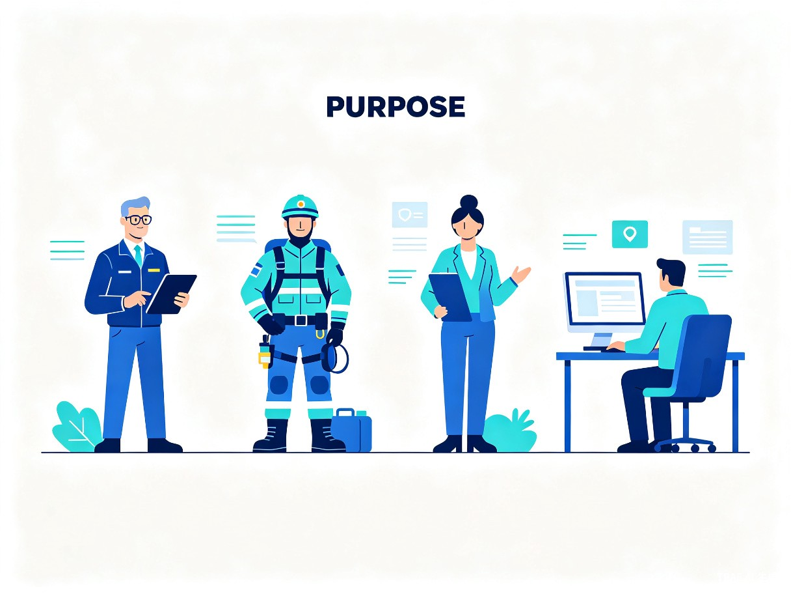
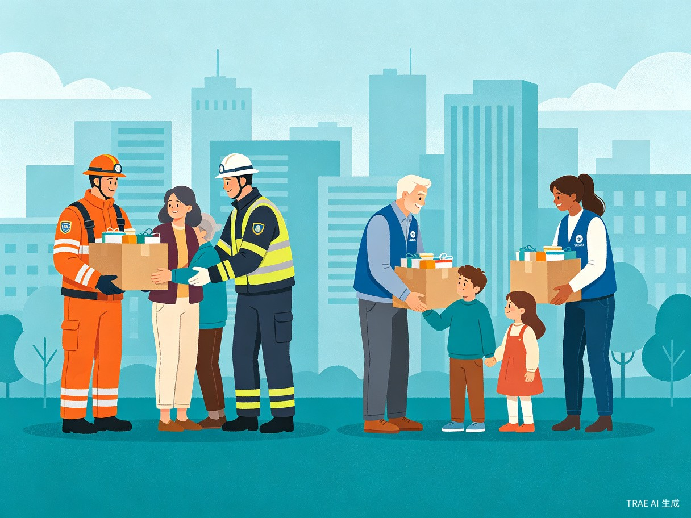
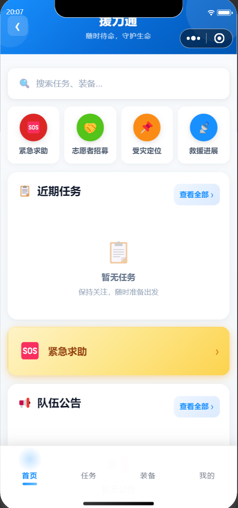
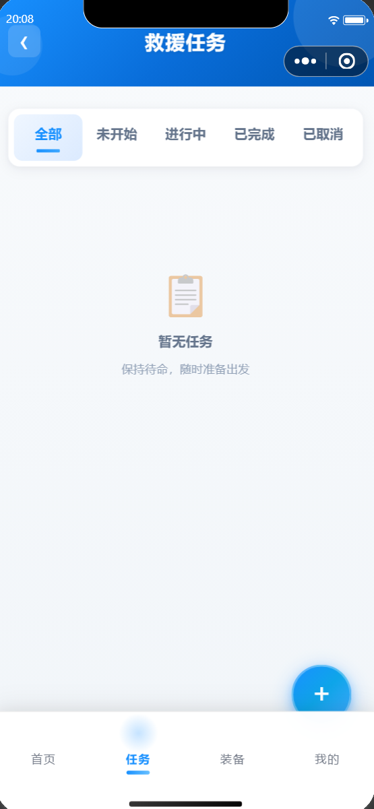
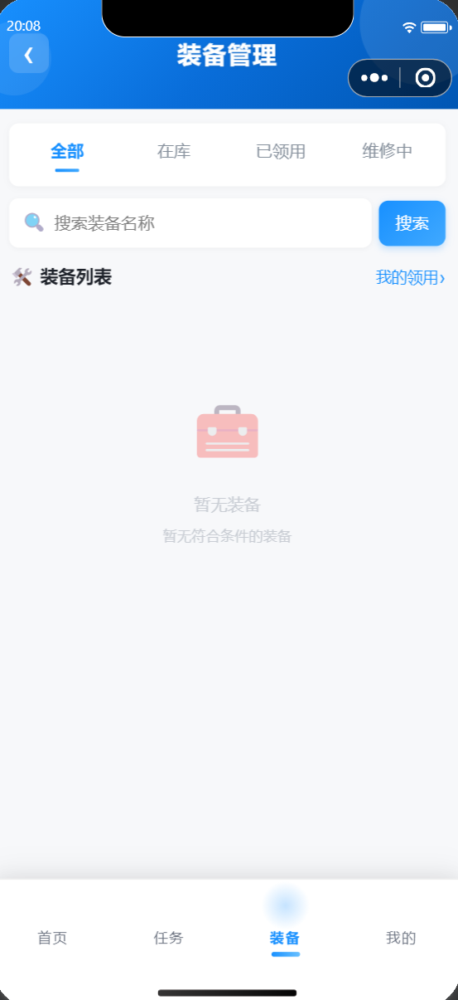
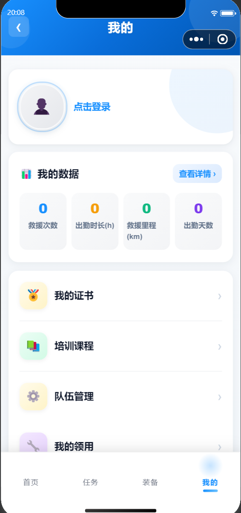

1创意介绍
援力通是一款专为民间救援队伍打造的数字化管理平台，通过信息化手段解决救援队伍在组织管理、资源调度、任务协同中的核心痛点。
想解决什么问题
民间救援队伍在我国灾害救援中发挥着重要作用，但大多数队伍仍依赖微信群、纸质表格进行管理，导致装备借用无追踪、任务调度靠电话、人员信息分散在多处，严重影响救援效率。
灵感来源
近年来极端天气频发，民间救援力量参与度越来越高。我们观察到：救援现场最缺的不是勇气，而是信息同步与资源调配能力。一个队员找不到装备、一条求助信息转发了三层群还没到达执行人，这些看似微小的信息断层，在紧急时刻可能延误最佳救援时机。
产品形态
援力通是一套 Web管理后台 + 微信小程序 + 后端服务 三位一体的系统，覆盖从队伍日常运营到紧急救援执行的全链路场景。
2目标用户及痛点

核心用户群体
救援队员
执行现场救援任务，需要快速查看任务详情、GPS签到、借用装备
队伍管理员
管理队伍成员、发布任务、审批装备借用、组织培训
平台管理员
全局系统配置、跨队伍协同调度、数据监管与报表分析
志愿者 & 受灾群众
报名参与活动、提交紧急求助、查看救援进展
使用场景
- 日常运营：管理员通过Web后台管理队员档案、装备库存、培训计划
- 任务执行：队员通过小程序接收任务、GPS签到签退、上传现场照片
- 紧急响应：受灾群众提交求助，平台自动派单到最近队伍，实时追踪进展
- 跨队协同：大型灾害时多支队伍联合救援，统一指挥视图协调资源
当前痛点
"没有援力通之前，我们的装备借用记录在三个不同的Excel里，任务通知发了五个群还有人没看到，培训证书到期了才想起来。"
| 痛点场景 | 传统方式 | 援力通方案 |
|---|---|---|
| 装备借用 | 纸质登记，归还靠催 | 扫码申请，自动库存扣减，超期自动提醒 |
| 任务调度 | 微信群@所有人 | 一键发布，队员小程序实时接收，GPS签到 |
| 人员管理 | Excel表格分散存储 | 统一档案，证书到期自动预警 |
| 信息同步 | 多层转发，信息失真 | 站内消息+公告已读追踪，确保触达 |
| 跨队协作 | 电话协调，进度不透明 | 协同任务视图，实时共享进展 |
3价值与意义

社会价值
民间救援队伍是我国应急体系的重要补充力量。援力通通过数字化手段降低救援组织的信息摩擦，让有限的人力资源在关键时刻发挥最大效能。每一次更快的装备领取、每一次更准确的任务派发，背后都可能关系到生命的救援窗口。
效率提升
任务响应提速
从"群消息层层转发"到"一键派单直达队员"，任务下发时间从小时级缩短至分钟级
装备管理透明化
实时库存可见，借用归还全流程追踪，杜绝装备"失踪"和重复采购
数据驱动决策
报表仪表盘汇聚多维度数据，队伍管理者可基于数据优化资源配置和培训计划
培训体系化
GPS/二维码签到、成绩录入、证书到期提醒，构建完整的队员能力档案
小程序界面预览




技术亮点
| 技术维度 | 实现方案 | 核心特性 |
|---|---|---|
| 后端服务 | Spring Boot 3 + MyBatis-Plus + MySQL 8 + Redis | RESTful API，统一返回体 Result<T>，86个业务错误码，16种异常全局处理 |
| 管理后台 | Vue 3 + Element Plus + ECharts + Pinia | 响应式布局，数据可视化仪表盘，RBAC权限控制，操作日志追踪 |
| 移动端 | 原生微信小程序 | 自研网络层：请求队列、熔断器、自动重试、离线队列、Token静默刷新 |
| 安全体系 | JWT + AES + HMAC/RSA + RBAC | Token黑名单、手机号AES加密、接口防篡改签名、细粒度权限、Redis限流 |
| 数据层 | MyBatis-Plus + 自动填充 | 统一逻辑删除、自动时间戳、IPage分页、TraceId全链路追踪 |
| 部署运维 | Docker + Nginx + GitHub Actions | 容器化一键部署、反向代理、CI/CD自动构建、Trivy镜像安全扫描 |
| 质量保障 | JUnit5 + Mockito + JaCoCo | 427个测试用例、Service单元测试、API集成测试、代码覆盖率监控 |
安全机制详解
身份认证
JWT双令牌机制：访问令牌24h + 刷新令牌7天，支持Token黑名单主动失效
数据加密
手机号等敏感数据AES加密存储；数据库密码等配置Jasypt加密
接口安全
HMAC+RSA请求签名，防篡改防重放；Redis滑动窗口接口限流
权限控制
RBAC角色权限模型，细粒度到按钮级；权限变更实时刷新缓存
自研网络层（小程序端）
针对救援现场网络不稳定场景，小程序自研网络层提供以下能力：
- 请求队列：并发请求统一管理，避免小程序并发限制
- 熔断器：服务端异常时自动熔断，防止雪崩
- 自动重试：网络抖动时自动重试，提升请求成功率
- 离线队列：无网络时缓存请求，恢复后自动补发
- Token静默刷新：访问令牌过期时自动刷新，用户无感知
4核心功能模块
功能全景
🔐 认证鉴权
手机号/微信登录、JWT令牌、短信验证码、账号注销
👥 队伍管理
队伍创建、层级结构、成员管理、邀请码加入
🔥 救援任务
任务发布、GPS签到签退、考勤审核、超时告警
🔧 装备管理
装备台账、借用归还、维修管理、低库存告警
🎓 培训证书
培训创建、GPS/二维码签到、成绩录入、证书到期提醒
🚨 紧急求助
求助提交、审核派发、状态跟踪、地图可视化
🌎 受灾定位
受灾人员录入、分配跟踪、热力图展示
🔄 资源调配
跨队伍资源申请、共享资源池、调配状态跟踪
🤝 多队协同
协同任务创建、邀请响应、联合指挥视图
🎁 物资捐赠
捐赠登记、审核分配、签收确认
📢 志愿者招募
招募发布、在线报名、审核签到
📖 知识库
救援知识文章、分类管理、公开浏览
5项目进展与质量
开发里程碑
v1.0 - 核心模块上线
完成15个模块、89个功能点的基础开发，支持队伍管理、任务调度、装备管理等核心流程
v1.1 - 质量优化迭代
修复24项问题，边界条件覆盖率从35%提升至96%，综合评分从78分提升至91分
v2.0 - 规划中
Redis集群、消息队列异步通知、Kubernetes部署、微服务拆分
质量保障
- 6个核心业务状态机严格校验，防止非法状态流转
- 16种异常类型全局统一处理，覆盖所有错误路径
- 安全机制全链路：JWT黑名单、AES加密、HMAC/RSA签名、RBAC权限
- CI/CD流水线：GitHub Actions自动构建、Trivy镜像安全扫描、JaCoCo覆盖率